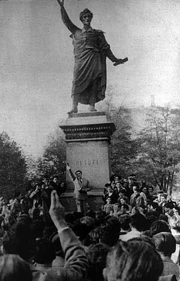

A megmaradt Európában csak úgy maradhatunk
hívek Magyarországhoz, ha soha és sehol
el nem áruljuk,
amiért a
magyar harcosok életüket adták, és soha, sehol
- még közvetve sem igazoljuk a
gyilkosokat.
Albert Camus
Vegyes érzelmeim vannak így estefelé, ahogy
végiggondolom ezt a nemzeti ünnepet. '56-ról kellett volna megemlékezni, de ez nem
sikerült. A hosszú hétvége első percétől az utolsóig az aktuálpolitika meg a status quo
gyilkolta az emberi lelket - sajnos így kell mondanom - mindkét oldalon. Bár voltak
szép beszédek, egyetlen szónokot sem hallottam, aki így vagy úgy ne lenne
elfogultnak nevezhető. Így estefelé visszasírom az iskolai megemlékezéseket, ahol
minden az unalmas forgatókönyv szerint zajlott (sosem látott diáktársak kerültek elő
egy-egy hamisan elkornyikált dal erejéig, valaki egy oda nem illő zenei darabok
nyekergett el a hegedűjén, satöbbi), közben mégis emberséget csepegtettek belénk.
Ahelyett, hogy kifacsartak volna. Végre belesüppedhetek a székembe, kibonthatok egy
doboz tejet, és egy kis zabpehellyel betermelhetem. Most gondolhatok azokra, akik
ötvenegy éve az egzisztenciájukat vagy az életüket adták a szabadságért. Ez az én
'56-om.
 Most biztos sokan felszisszennek közületek, hogy "akkor ez kint se
volt!", vagy "akkor ez nem is támogatja a mi harcunkat!". Minek ír az ilyen a
Bombagyárra! Éppen azért írok most, hogy elmondjam: '56 nem ott kezdődik, hogy mit
üzen a tévéből egy politikus. Akkor már az is közelebb áll hozzá, amit az összegyűlt
tömeg visszhangzik vissza a hordón álló szónoknak. Nem a mostani szónokokra gondolok. Én
most Sinkovitsra gondolok, aki elszavalta a Nemzeti dalt. Ezzel ott és akkor
megvalósult az, amire olyan régóta nem vagyunk hajlandóak: mindenki egy irányba
nézett, egy szent középpont felé, a Szabadság ikonja felé. Végre egyszerre dobbant
minden szív. Egy ország értette meg néhány óra leforgása alatt, mi az a
konkordancia. A pesti hírek hallatán a vidék azonnal csatlakozott a forradalomhoz,
hol munkások, hol papok, hol parasztok, hol értelmiségiek vették a kezükbe az
irányítást. Mindenki a kezébe vette a közös sorsot. És amit nem szabad elfelejteni, hogy a
jövőt is, azaz a mi jelenünket. Pedig féltek, nagyon féltek. Alig tíz éve szállták
meg az oroszok Magyarországot. A vesztes háborúból kilábalva nem lehetett egyszerű
feladat újra fegyvert ragadni a hazáért. Képzeljétek csak el, milyen szívvel indult
el az, aki pléhtányérokkal rakta végig az utcát a háztömbök között! Tudta, hogy az
orosz tankok megtorpannak majd az "aknák" láttán, és addig sebezhetőek lesznek.
Képzeljétek csak el, mit érzett Nagy Imre, amikor megtudta, hogy az előzetesen
megbeszélteket áthágva román területen tartják fogva! Mit érzett az az anya, akinek a fia
csak az imént fordult ki lódenkabátjában a lakásból...
Mostanában
újra és újra kifakadnak az ismerőseim, hogy "miért kell ezt csinálni". Az elmúlt
napok zavargásairól beszélnek. És várják, hogy vagy igazoljam őket, vagy mondjak
ellent nekik. Egyszerre csak sikerül kimondani:
- Én is aggódom - valahogy
így. Ezt persze rögtön úgy értik, hogy magam is az utcai harcok támogatója,
esetleg résztvevője vagyok.
- Miért aggódsz? - teszi fel a kérdést az
értelmesebbje. És valóban, ez megállít egy pillanatra. Ilyenkor aztán a Jézus nevű
csávóra gondolok, mert én gondolhatok rá, hogy azt mondta, ne féljünk attól, ha szólni
kell, mert akkor majd a Lélek segít a jót mondani. (Egyébként ez épp a szombati
evangéliumban volt.)
- A hazámért - és érzem, hogy ez volt az, amit a Lélek
üzent, minden ember lelke, akiért szóltam. Ezután az következik, hogy a velem
szemben álló fejtegetésbe kezd korunk közhelyeivel arról, hogy a haza, nép és
nemzet elavult fogalmak. Hisz én magam se vagyok teljesen magyar, és ki mondhatná meg, kié
ez az ország. Kibukik belőlem a kissé egyszerűnek tűnő válasz:
- Ez a föld,
melyen annyiszor apáink vére folyt... - mondom, és ezen magam is hosszan
elgondolkodom. A szabadságot nem ők nyerték el, de ők adták vissza nekünk.
Kinek a hazája ez? Kié '56? Nem azoké, akik az újra és újra visszavert
utcai harcokban látják a megoldást. Nem azoké, akik biztonsági emberek és
rohamrendőrök védelmében pátosszal teli mondókát szavalnak. Nem azoké, akik ma menő
vállalkozók, vagy egy leszakadó társadalmi réteg tagjai, nem is a sajtkészítőké.
'56 mindenki forradalma volt, akinek ez a hazája.
Nyelvtanilag ugyanaz, értelmileg mégsem: '56 az utcákon harcolóké, a biztonsági emberek
gyűrűjében nyilatkozó politikusoké, rohamrendőröké, nagykutyáké, szegényeké,
sajtkészítőké. És vannak persze olyanok is, akik külföldiként joggal mondhatnák
magukénak '56-ot. Például ide tartozik a filozófus Albert Camus és a fotós Jean-Pierre
Pedrazzini. Utóbbi az életével fizetett azért a lelkesedésért, amit a forradalom
váltott ki belőle. Emlékét a Köztársaság téren állított tábla őrzi. 1956. október 30-án
reggel, 29 évesen érte találat, miközben a sebesülteket mentette. Több, mint egy
hétig viaskodott a halállal.
Ez ma az én '56-om. Az asztalomnál ülve a
kiürült bögrémet nézem, és újra átfut az agyamon, hogy mit gondoltok majd rólam.
Végül csak annyit mondok, tegyetek
bármit, érezzetek
bárhogy, '56 a miénk, mert apáinktól kaptuk
ajándékba.